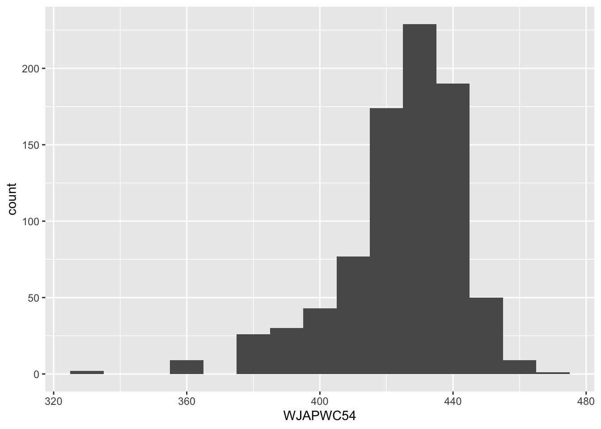
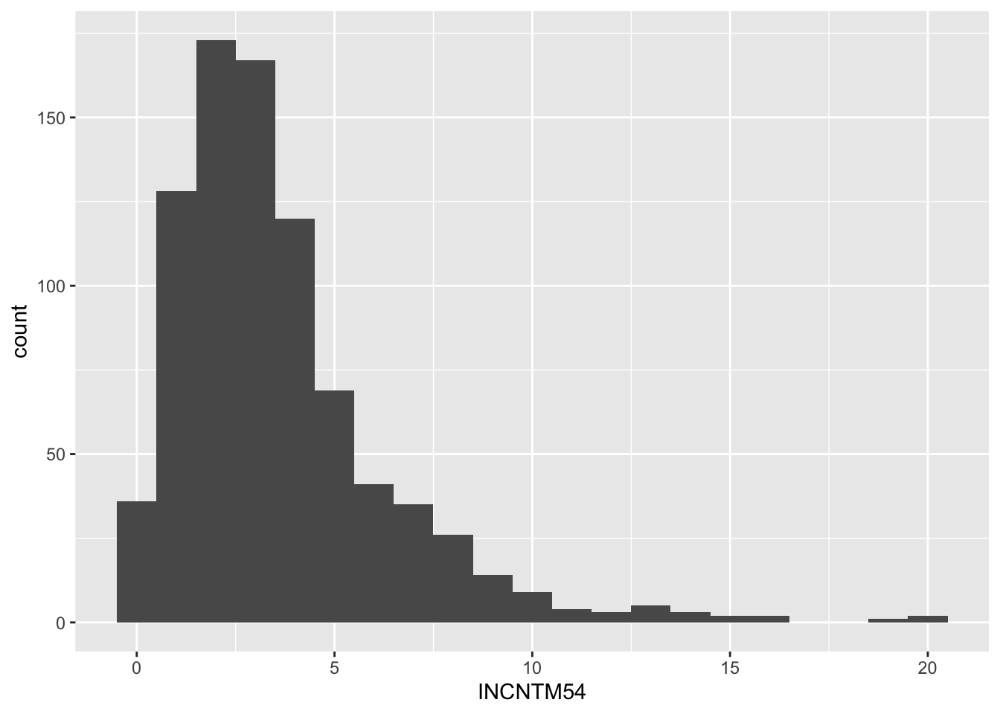
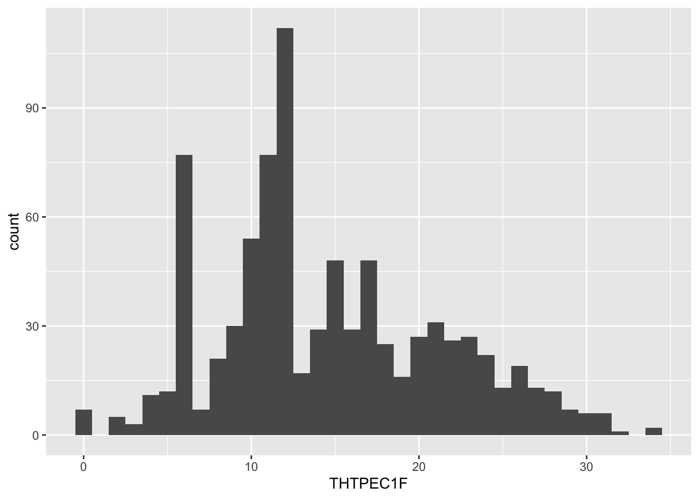
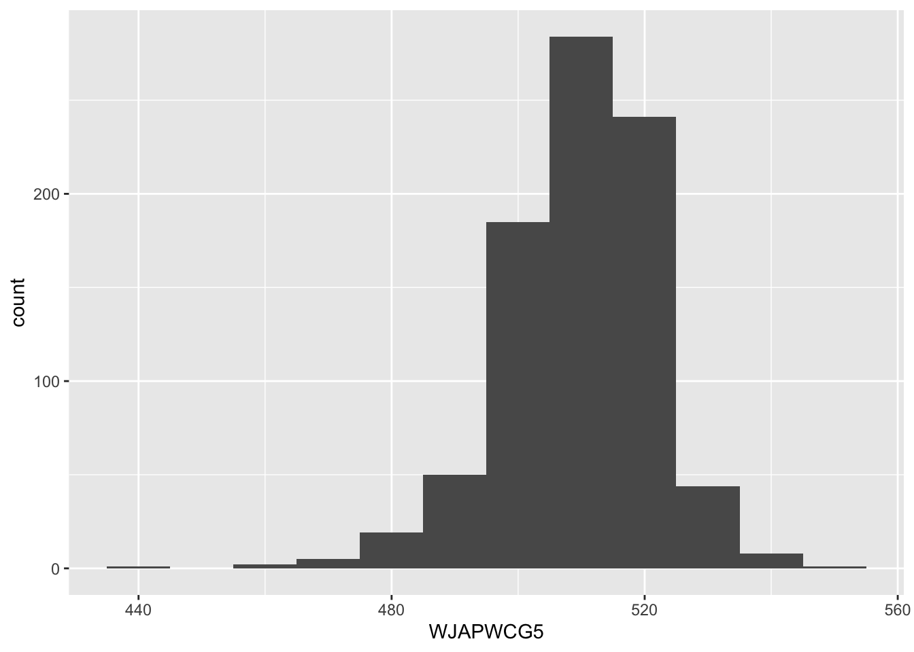
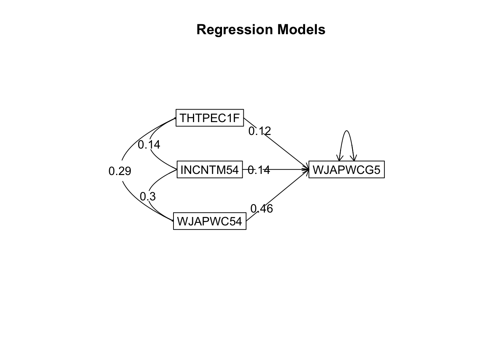

Chapter 10 Multivariate correlational research
Are early planning abilities related to later academic achievement? Let’s say you used data available from the NICHD Study of Early Child Care and Youth Development (SECCYD) to test this research question. The NICHD SECCYD followed more than 1,000 children from birth to age 15. There were 10 data collection sites across the country. Temple University in Philadelphia (where I went to grad school) was one of them. The initial researchers involved in the study used a sampling method that ensured that the sample was diverse. This dataset includes repeated assessment of a variety of measures related to social, cognitive, and heath development - with data on the study children, as well as their family, friends, and teachers.
One of the things that the NICHD SECCYD research team measured was the study children’s planning skills. They operationalized this as the study children’s performance on the Tower of Hanoi (TOH). The TOH is a puzzle that involves moving three rings of different diameters and colors among three pegs. The object is to move the rings from an initial position to a goal position, and movements are constrained by rules. This task requires children to think ahead - it evaluates the ability to plan and organized sequences of moves. You will use the first grade assessment for our analysis.
Study children’s academic achievement was measured with the Woodcock-Johnson - Revised Test of Achievement multiple times throughout the study (Woodcock & Jonhnson, 1989). Based on normative data, the WJ-R has good reliability (Woodcock, 1997; Woodcock & Johnson, 1989). Internal consistency ranges from the high .80s to the .90s. Test-retest reliability ranges from the .60s to the .80s. The WJ-R also has excellent predictive validity across the lifespan (Woodcock, 1997; Woodcock & Johnson, 1989) and is highly correlated with other tests of cognitive abilities and achievement (McGrew, Werder, & Woodcock, 1991).
Let’s say you tested whether the first grade planning abilities (AKA TOH performance) is related to subsequent math achievement in fifth grade. The applied problems subscale of the WJ-R measures math achievement. It requires children to analyze and solve practical word and story problems with math calculations. Early items include problems related to counting ability and number quantity. The word problems progressed in difficulty to items that require money recognition and time concepts, followed by items involving advanced operations and extraneous information.
You controlled for prior math achievement and SES when the study children were at 54 month old.
The data is in the planning.csv file on D2L. Let’s open it up:
The THTPEC1F variable is the study childrens’ total planning scores in first grade (i.e. thier TOH performance).
The variables WJAPWC54 and WJAPWCG5 are the W-scores of the WJ-R at 54 months and fifth grade. W-scores are special transformations of the Rasch ability scale converted from the raw scores, leading to an equal interval scale. They are centered at a value of 500 and linked to age to allow for comparisons across standardized tests and ages, making it possible to assess individual development over time.
INCNTM54 is the measure of SES. It is study children’s family income-to-needs ratios, which were created by dividing the poverty threshold for the household size by the reported family income.
10.1 Get to know data
Load the tidyverse and psych packages if they are not already:
Let’s first create histograms for each variable:




Interpretation
The SES measure looks positively skewed (measures of income typically are). Moreover it looks like there may be some outliers in in the applied problems WJ-R scores. However multiple regression is robust to slight deviations in normality and to modest univariate outliers.
Next compute descriptive statistics:
## vars n mean sd median trimmed mad min max range skew
## ID 1 840 420.50 242.63 420.50 420.50 311.35 1.0 840.0 839.0 0.00
## WJAPWC54 2 840 425.31 18.72 428.00 427.34 16.31 332.0 473.0 141.0 -1.24
## INCNTM54 3 840 3.59 2.74 2.96 3.21 1.92 0.1 20.2 20.1 1.97
## THTPEC1F 4 840 14.61 6.71 13.00 14.25 5.93 0.0 34.0 34.0 0.44
## WJAPWCG5 5 840 510.26 11.79 511.00 510.84 11.86 438.0 547.0 109.0 -0.76
## kurtosis se
## ID -1.20 8.37
## WJAPWC54 2.55 0.65
## INCNTM54 6.04 0.09
## THTPEC1F -0.43 0.23
## WJAPWCG5 2.46 0.4110.2 Multiple regression
We will use the setCor() function from the psych package to compute the regression equation (AKA regresssion model).
The setCor() function takes the form of: Criterion variable ~ predictor variable 1 + predictor variable 2… etc.
By default, setCor() reports standardized slopes (AKA betas).
Here is the setCor() function that predicts study children’s fifth grade math achievement scores (WJAPWCG5) from their total planning scores (THTPEC1F), their family SES (INCNTM54), and their math achievement at 54 months (WJAPWC54). We will call the object that stores this model planmodel. You also have to tell R where to find the data (in the data = part).
You must save the model to an object in R and then call that object to see the results of the model.

## Call: setCor(y = WJAPWCG5 ~ THTPEC1F + INCNTM54 + WJAPWC54, data = plan)
##
## Multiple Regression from raw data
##
## DV = WJAPWCG5
## slope se t p lower.ci upper.ci VIF
## (Intercept) 0.00 0.03 0.00 1.0e+00 -0.06 0.06 1.00
## THTPEC1F 0.12 0.03 3.96 8.1e-05 0.06 0.18 1.10
## INCNTM54 0.14 0.03 4.70 3.0e-06 0.08 0.20 1.10
## WJAPWC54 0.46 0.03 14.97 4.5e-45 0.40 0.52 1.18
##
## Residual Standard Error = 0.82 with 836 degrees of freedom
##
## Multiple Regression
## R R2 Ruw R2uw Shrunken R2 SE of R2 overall F df1 df2 p
## WJAPWCG5 0.57 0.32 0.52 0.27 0.32 0.03 133.23 3 836 1.52e-70The regression table can be found under the words “Multiple Regression from raw data”. You can confirm that the criterion variable is fifth grade math achievement scores (WJAPWCG5).
Next is the regression table which tells us if each predictor variable separately predicts fifth grade math achievement scores. The first column is the variable name. The next column is the slope (AKA beta or the standardized coefficient). The se column is the standard error associated with the slope. Next is the t-statistic associated with the slope, followed by the p-value associated with the t-statistic. After that are the lower and upper bounds of the confidence interval around the slope. Don’t worry about the VIF.
Interpretation
The beta for THTPEC1F is 0.12 (95%CI: .06 to .18). This beta means that first grade planning abilities are associated with fifth grade math achievement such that higher scores on the planning abilities task go with higher scores on the fifth grade math achievement test, controlling for the other predictors, family SES and prior math achievement
The beta for INCNTM54 is 0.14 (95%CI: .08 to .20). This beta means that family SES is associated with fifth grade math achievement such that higher levels of family SES go with higher scores on the fifth grade math achievement test, controlling for the other predictors, planning abilities and prior math achievement
The beta for WJAPWC54 is 0.46 (95%CI: .40 to .52). This beta means that prior math abilities are associated with fifth grade math achievement such that higher scores on the applied problems subscale of the WJ-R at 54 months go with higher scores on the applied problems subscale of the WJ-R at fifth grade, controlling for the other predictors, planning abilities and family SES.
The table under “Multiple Regression” reports the total model summary statistics. Of interest here is R-squared (R2), which is .32. This R-squared means that the total planning scores, family SES (INCNTM54), and prior math achievement (WJAPWC54) accounts for 32% of the variation in fifth grade math achievement scores (WJAPWCG5).
We can also see that together these three predictor variables have a statistically significant association with fifth grade math achievement scores. The F-value (133.23) and the p-value (<.001) tell us the collectively, planning abilities, family SES, and prior math achievement are significantly associated with fifth grade math achievement scores. Another way to think about this is that planning abilities, family SES, and prior math achievement explain a statistically significant proportion of the variation in fifth grade math achievement scores.
Here is a sample APA-style write up of the results:
We hypothesized that planning abilities would be positively associated with subsequent math achievement controlling for family SES and prior math achievement. Collectively, these variables explained 32% of the variation in fifth grade math achievement, F(3, 836) = 133.23, p < .001, R2 = .32. As predicted, there was a positive association between first grade planning abilities and math achievement scores 4 years later when children were in fifth grade (Beta = .12, 95%CI: .06 to .18, p < .001).
10.2.1 Optional additional information
10.2.1.1 ApaTables
There is a package call apaTables that will make APA-style tables. Here is how to use it to create an APA-style regression table.
First install it:
install.packages("apaTables")
Then in order to use it, you have to calculate the regression equation with base R’s multiple regression function - which is lm(). I chose to teach with the psych package’s multiple regression function (i.e. setCor()) because it calculates the 95% confidence intervals around the slope. Base R’s multiple regression function does not do this.
The only difference between lm() and setCor() is going to be the function that you use - everything else is the same.
Replace the setCor() with lm():
Then load the apaTables package (if you have not done so already) and use the apa.reg.table() function. Within this function first tell R the name of the object you saved your regression equation in. Then tell R where you want your table saved to. Then tell R what kind of table to make (the regression table is type 2).
##
##
## Table 2
##
## Regression results using WJAPWCG5 as the criterion
##
##
## Predictor b b_95%_CI beta beta_95%_CI sr2 sr2_95%_CI r
## (Intercept) 381.10** [365.40, 396.80]
## THTPEC1F 0.21** [0.10, 0.31] 0.12 [0.06, 0.18] .01 [.00, .03] .27**
## INCNTM54 0.60** [0.35, 0.86] 0.14 [0.08, 0.20] .02 [.00, .03] .30**
## WJAPWC54 0.29** [0.25, 0.33] 0.46 [0.40, 0.52] .18 [.14, .23] .54**
##
##
##
## Fit
##
##
##
##
## R2 = .323**
## 95% CI[.27,.37]
##
##
## Note. A significant b-weight indicates the beta-weight and semi-partial correlation are also significant.
## b represents unstandardized regression weights. beta indicates the standardized regression weights.
## sr2 represents the semi-partial correlation squared. r represents the zero-order correlation.
## Square brackets are used to enclose the lower and upper limits of a confidence interval.
## * indicates p < .05. ** indicates p < .01.
## And there is your APA-style table! Note that it saved to a word document as well. The file will be listed in the files window and will be called planmodel.doc. Click on the file name and it should download on to your computer.
10.2.1.2 Unstandardized slopes
There are some situations that call for unstandardized coefficients. R will compute unstandardized coefficients if you add std =FALSE to the setCor() function. For example:
testsc0 <- setCor(WJAPWCG5 ~ INCNTM54 + WJAPWC54 + THTPEC1F, data = plan, std =FALSE)
10.3 Mediation and moderation
Shoot me an email if you ever need to do a mediation or moderation analysis.